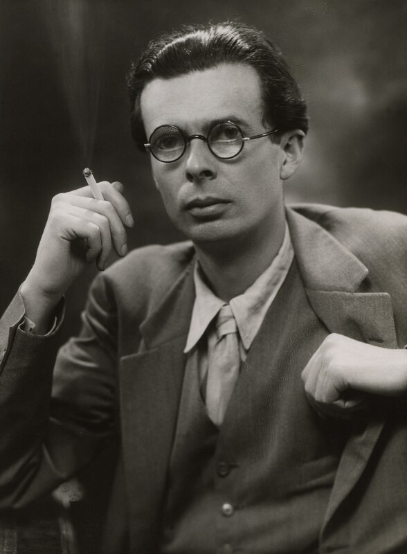

Aldous Huxley was an English Writer. He wrote a number of books the most famous being
"A Brave New World". He studied in botany and philosophy, a favorite book of mine
to come out of his research The Doors of Perception. It is a eye opening book into the
psychedlic experience. Aldous Huxley died November 22nd 1963, his final request was to
be injected with LSD on his death bed. He was an eccentric character worth reading and
learing from.
